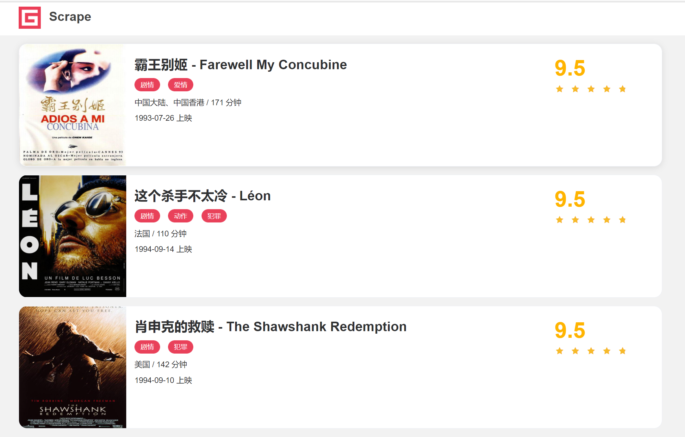

本文最后编辑于
安装 requests是一个第三方库，使用pip下载安装。
实例引入 用Python写爬虫的第一步就是模拟发起一个请求，把网页的源代码获取下来。
在浏览器中输入一个URL并回车，实际上就是让浏览器帮我们发起一个GET类型的HTTP请求，浏览器得到源代码后，把它渲染出来就可以看到网页内容了。
那如果想用requests来获取源代码，应该怎么办呢？很简单，requests这个库提供了一个get方法，调用这个方法，并传入对应的URL就能得到网页的源代码。
比如这里有一个示例网站:https://static1.scrape.cuiqingcai.com/ ，其内容如下：

这个网站展示了一些电影数据，如果想要把这个网页里面的数据爬下来，比如获取各个电影的名称、上映时间等信息，然后把它存下来的话，该怎么做呢？
第一步当然就是获取它的网页源代码了。
可以用requests这个库轻松地完成这个过程，代码的写法是这样的：
1 2 3 4 import requestsr = requests.get(url='https://static1.scrape.cuiqingcai.com/' , verify=False ) print (r.text)
输出结果如下：
1 2 3 4 5 6 7 8 9 10 11 12 13 14 15 16 17 18 19 20 21 22 23 24 25 26 27 28 29 30 31 32 33 34 35 36 37 38 39 40 41 42 43 44 45 46 47 48 49 50 51 52 53 54 55 56 57 58 59 60 61 62 63 64 65 66 67 68 69 70 71 72 <html lang ="en" > <head > <meta charset ="utf-8" > <meta http-equiv ="X-UA-Compatible" content ="IE=edge" > <meta name ="viewport" content ="width=device-width,initial-scale=1" > <link rel ="icon" href ="/static/img/favicon.ico" > <title > Scrape | Movie</title > <link href ="/static/css/app.css" type ="text/css" rel ="stylesheet" > <link href ="/static/css/index.css" type ="text/css" rel ="stylesheet" > </head > <body > <div id ="app" > <div data-v-74e8b908 ="" class ="el-row" id ="header" > <div data-v-74e8b908 ="" class ="container el-col el-col-18 el-col-offset-3" > <div data-v-74e8b908 ="" class ="el-row" > <div data-v-74e8b908 ="" class ="logo el-col el-col-4" > <a data-v-74e8b908 ="" href ="/" class ="router-link-exact-active router-link-active" > <img data-v-74e8b908 ="" src ="/static/img/logo.png" class ="logo-image" > <span data-v-74e8b908 ="" class ="logo-title" > Scrape</span > </a > </div > </div > </div > </div > ... <li class ="number" > <a href ="/page/7" > 7</a > </li > <li class ="number" > <a href ="/page/8" > 8</a > </li > <li class ="number" > <a href ="/page/9" > 9</a > </li > <li class ="number" > <a href ="/page/10" > 10</a > </li > </ul > <a href ="/page/2" class ="next" > <button type ="button" class ="btn-next" > <i class ="el-icon el-icon-arrow-right" > </i > </button > </a > </div > </div > </div > </div > </div > </div > </body > Process finished with exit code 0
由于网页内容比较多，这里省略了大部分内容。
不过看运行结果，我们已经成功获取网页的HTML源代码，里面包含了电影的标题、类型、上映时间，等等。
把网页源代码获取下来之后，下一步我们把想要的数据提取出来，数据的爬取就完成了。
请求 HTTP中最常见的请求之一就是GET请求。
GET请求换一个示例网站，其URL为http://httpbin.org/get ，如果客户端发起的是GET请求的话，该网站会判断并返回相应的请求信息，包括 Headers、IP等。 我们还是用相同的方法来发起一个GET请求，代码如下：
1 2 3 4 import requestsr = requests.get(url='http://httpbin.org/get' , verify=False ) print (r.text)
返回结果：
1 2 3 4 5 6 7 8 9 10 11 12 { "args": {}, "headers": { "Accept": "*/*", "Accept-Encoding": "gzip, deflate", "Host": "httpbin.org", "User-Agent": "python-requests/2.25.1", "X-Amzn-Trace-Id": "Root=1-60a3a8ad-070f8b95711f7821709e24ed" }, "origin": "202.62.113.207", "url": "http://httpbin.org/get" }
可以发现，成功发起了GET请求，也通过这个网站的返回结果得到了请求所携带的信息，包括Headers、URL、IP，等等。
对于GET请求，我们知道URL后面是可以跟上一些参数的，如果我们现在想添加两个参数，其中name是germey，age是25，URL就可以写成如下内容：
1 http://httpbin.org/get?name=germey&age=25
要构造这个请求链接，是不是要直接写成这样呢？
1 r = requests.get('http://httpbin.org/get?name=germey&age=25' )
这样也可以，但如果这些参数还需要手动拼接，未免有点不人性化。
一般情况下，这种信息我们利用params这个参数就可以直接传递了，示例如下：
1 2 3 4 5 6 7 8 9 import requestsdata = { 'name' : 'holy' , 'age' : 25 } r = requests.get(url='http://httpbin.org/get' , params=data, verify=False ) print (r.text)
返回结果：
1 2 3 4 5 6 7 8 9 10 11 12 13 14 15 { "args": { "age": "25", "name": "holy" }, "headers": { "Accept": "*/*", "Accept-Encoding": "gzip, deflate", "Host": "httpbin.org", "User-Agent": "python-requests/2.25.1", "X-Amzn-Trace-Id": "Root=1-60a3ab05-51321f5c7eeb7b0573bb5510" }, "origin": "202.62.113.207", "url": "http://httpbin.org/get?name=holy&age=25" }
把URL参数通过字典的形式传给get方法的params参数，通过返回信息可以判断，请求的链接自动被构造成了：http://httpbin.org/get?age=22&name=germey
网页的返回类型实际上是str类型，但是它很特殊，是JSON格式的。所以，如果想直接解析返回结果，得到一个JSON格式的数据的话，可以直接调用json方法。
示例如下：
1 2 3 4 5 6 7 8 9 10 11 import requestsdata = { 'name' : 'holy' , 'age' : 25 } r = requests.get(url='http://httpbin.org/get' , params=data, verify=False ) print (type (r.text))print (r.json())print (type (r.json()))
结果如下：
1 2 3 <class 'str'> {'args': {'age': '25', 'name': 'holy'}, 'headers': {'Accept': '*/*', 'Accept-Encoding': 'gzip, deflate', 'Host': 'httpbin.org', 'User-Agent': 'python-requests/2.25.1', 'X-Amzn-Trace-Id': 'Root=1-60a3ac52-425e713a2907d0302f298070'}, 'origin': '202.62.113.207', 'url': 'http://httpbin.org/get?name=holy&age=25'} <class 'dict'>
调用json方法，就可以将返回结果是JSON格式的字符串转化为字典。 但需要注意的是，如果返回结果不是JSON格式，便会出现解析错误，抛出json.decoder.JSONDecodeError异常。
抓取网页 上面的请求链接返回的是JSON形式的字符串，那么如果请求普通的网页，则肯定能获得相应的内容。下面以本课时最初的实例页面为例，我们再加上一点提取信息的逻辑，将代码完善成如下的样子：
1 2 3 4 5 6 7 import requestsimport rer = requests.get('https://static1.scrape.cuiqingcai.com/' , verify=False ) pattern = re.compile ('<h2.*?>(.*?)</h2>' , re.S) titles = re.findall(pattern, r.text) print (titles)
运行结果：
1 ['霸王别姬 - Farewell My Concubine' , '这个杀手不太冷 - Léon' , '肖申克的救赎 - The Shawshank Redemption' , '泰坦尼克号 - Titanic' , '罗马假日 - Roman Holiday' , '唐伯虎点秋香 - Flirting Scholar' , '乱世佳人 - Gone with the Wind' , '喜剧之王 - The King of Comedy' , ' 楚门的世界 - The Truman Show' , '狮子王 - The Lion King' ]
抓取二进制数据 抓取的是网站的一个页面，实际上它返回的是一个HTML文档。如果想抓取图片、音频、视频等文件，应该怎么办呢？
图片、音频、视频这些文件本质上都是由二进制码 组成的，由于有特定的保存格式和对应的解析方式，我们才可以看到这些形形色色的多媒体。所以，想要抓取它们，就要拿到它们的二进制数据。
下面以 GitHub 的站点图标为例来看一下：
1 2 3 4 5 import requestsr = requests.get('https://github.com/favicon.ico' ) print (r.text)print (r.content)
这里抓取的内容是站点图标，也就是在浏览器每一个标签上显示的小图标。
前者出现了乱码，后者结果前带有一个b，这代表是bytes类型的数据。
由于图片是二进制数据，所以前者在打印时转化为str类型，也就是图片直接转化为字符串，这当然会出现乱码。
上面返回的结果我们并不能看懂，它实际上是图片的二进制数据，没关系，将刚才提取到的信息保存下来就好了，代码如下：
1 2 3 4 5 6 import requests r = requests.get('https://www.baidu.com/img/PCtm_d9c8750bed0b3c7d089fa7d55720d6cf.png' , verify=False ) with open ('baidu.png' , 'wb' ) as f: f.write(r.content)
这里用了open方法，它的第一个参数是文件名称，第二个参数代表以二进制的形式打开，可以向文件里写入二进制数据。
运行结束之后，可以发现在文件夹中出现了名为baidu.png的图标。
在发起一个HTTP请求的时候，会有一个请求头Request Headers，那么这个怎么来设置呢？
很简单，使用headers参数就可以完成了。
在刚才的实例中，是没有设置Request Headers信息的，如果不设置，某些网站会发现这不是一个正常的浏览器发起的请求，网站可能会返回异常的结果，导致网页抓取失败。
要添加Headers信息，比如添加一个User-Agent字段，可以这么写：
1 2 3 4 5 6 7 8 9 import requestsheaders = { 'User-Agent' : 'Mozilla/5.0 (Macintosh; Intel Mac OS X 10_11_4) AppleWebKit/537.36 (KHTML, like Gecko) Chrome/52.0.2743.116 Safari/537.36' } r = requests.get('https://static1.scrape.cuiqingcai.com/' , headers=headers, verify=False ) print (r.text)
当然，我们可以在headers这个参数中任意添加其他的字段信息。
POST请求 使用requests实现post请求，示例如下：
1 2 3 4 5 6 import requestsdata = {'name' :'germey' , 'age' :'25' } r = requests.post("http://httpbin.org/post" , data=data) print (r.text)
这里还是请求http://httpbin.org/post ，该网站可以判断如果请求是POST方式，就把相关请求信息返回。
运行结果如下：
1 2 3 4 5 6 7 8 9 10 11 12 13 14 15 16 17 18 19 20 21 { "args" : {}, "data" : "" , "files" : {}, "form" : { "age" : "25" , "name" : "germey" }, "headers" : { "Accept" : "*/*" , "Accept-Encoding" : "gzip, deflate" , "Content-Length" : "18" , "Content-Type" : "application/x-www-form-urlencoded" , "Host" : "httpbin.org" , "User-Agent" : "python-requests/2.25.1" , "X-Amzn-Trace-Id" : "Root=1-60a402c2-68a523624a9ca353207a3a5e" }, "json" : null, "origin" : "202.62.113.207" , "url" : "http://httpbin.org/post" }
响应 发送请求后，得到的就是响应，即Response。
在上面的实例中，使用text和content获取了响应的内容。此外，还有很多属性和方法可以用来获取其他信息，比如状态码、响应头、Cookies等。示例如下: